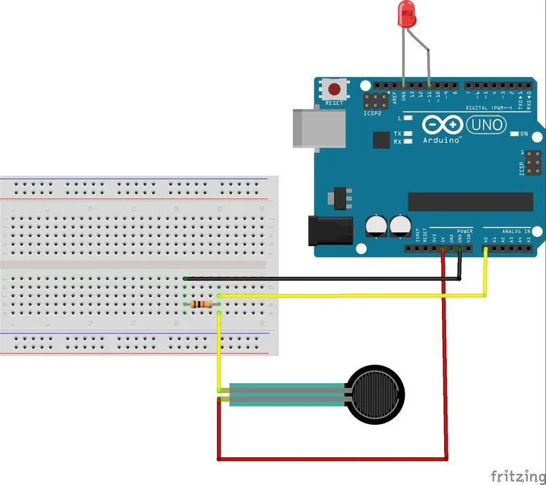

Workout Tracking
With plenty of time during quarantine to establish a consistent workout, I decided to build a workout tracker this week. Okay, workout tracker might be a bit of an overstatement. I built a simple force sensitive sensor that connects to a web app I’m running on my computer to log various forces over time. I used this to record me jump roping (one of my favorite workouts) as I typically do not have an easy way to objectively measure reps or intensity day over day.
The Circuit
I had a force sensitive resistor from an old electronics kit. This sensor works in a similar way to a thermistor in that the resistance varies depending on, in this case, force applied. While the sensor is not precise at quantifying the force that is put on it, it can measure relative force, which is sufficient for this application. The sensor consists of two capacitative plates separated by a spacer that allows the plates to get closer when force is applied. The circuit to use this sensor was remarkably simple.
The only elements I needed were the sensor and a $200\Omega$ resistor (the resistance of this resistor doesn’t matter but I chose a small value to measure a larger range of forces).
Using this guide I found the easiest way to use the force sensor was like this:

Note that this circuit is a voltage divider that replaces one of the resistors with the variable force sensitive resistor. The variable voltage split will then allow us to measure the force at one of the pins. Analyzing this circuit we find:
$$V_{out} = 3.3 V \cdot 200\Omega / (200\Omega + R)$$
The resistance of the resistor decreases as the capacitative plates come closer with more force, which causes the output voltage to increase.
The Code
With the circuit set up I needed to find a way to log the data from the force sensor. With the quarantine, I will be jump roping at home. The main draw of using WiFi/Bluetooth for my recording is to have an automatic and persistent method of recording. An alternative that would be less convenient but wouldn’t require networking would be to store the data on the microcontroller in an array and then upload it to my computer. Because I will be jump roping at home, I decided to set up my web app to receive the data locally, instead of having to sign up for an API. If I ever want to take my workout tracker away from home, I could possibly use ngrok, which will introduce a tunnel to the localhost address of my Flask server.
In the simple case, the Huzzah board would POST data to a route in a simple Flask server I had set up on my desktop. The Flask server will then store these results in a sqlite3 database. With this data stored I can use a fourier transform to find the frequency of my jumps and can also count peaks above a certain threshold of force to count number of jumps. Because this data is persistent I can also chart progress over time.
On the Arduino end, the code simply connects to wifi and stores data throughout the loop over 10ms intervals:
#include <WiFi.h>
#include <HTTPClient.h>
#include <ArduinoJson.h>
const int force_sensor = A2;
const char* ssid = "Your WIFI Network Name";
const char* password = "Your WIFI Network Password";
const String server = "Your Server Address";
const String route = "/data";
// create JSON array to store data
const int LEN = 1024;
long data[LEN];
int j = 0;
// Returns array of long data as stringified json object {"data": []}
String stringify(long* longData, int len) {
DynamicJsonDocument doc(len * 8);
JsonObject obj = doc.to<JsonObject>();
JsonArray data = obj.createNestedArray("data");
for (int i = 0; i < len; i++) {
data.add(longData[i]);
}
String postData;
serializeJson(doc, postData);
return postData;
}
void setup() {
Serial.begin(115200);
WiFi.begin(ssid, password);
while (WiFi.status() != WL_CONNECTED) {
delay(1000);
Serial.println("Connecting to WiFi..");
}
Serial.println("Connected to the WiFi network");
}
void loop() {
int val = analogRead(force_sensor);
data[j] = val / 4095.0;
j++;
// Send data after collection LEN data points
if (((j + 1) % LEN) == 0 && WiFi.status() == WL_CONNECTED) {
HTTPClient Post;
Post.begin(server + route);
Post.addHeader("Content-Type", "application/json");
Post.POST(stringify(data, LEN));
Post.end();
}
delay(10);
}
The Flask app is relatively simple as well:
from flask import Flask, request
import json
from werkzeug.exceptions import BadRequest
app = Flask(__name__)
@app.route('/data', methods=["POST"])
def data_route():
try:
data = request.get_json()
print(data)
except (TypeError, BadRequest, KeyError):
return "Error"
return "Success"
If you save this file as app.py and run flask run in the same
directory this will start your app on a local server. If you download and
install ngrok you can then run ngrok http 5000 (or
whatever port your flask app is running on) and put the return ngrok url
in as your server address in the Arduino code above. This will expose
a public URL that can be easily accessed by the Arduino even if your
computer and microcontroller are on different wifi networks.